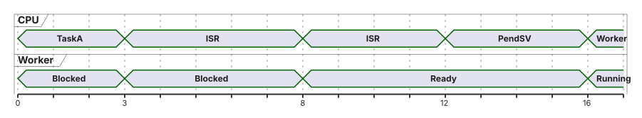

05 · Inter-Task-Kommunikation und Interrupts
Queues, Mailboxes und ISR-Anbindung · EZS · DHBW Stuttgart
Prof. Dr.-Ing. Daniel Klünder
Willkommen zurück zu Echtzeitsysteme!
Fünfter Termin: Daten transportieren, nicht nur sperren
Ein FreeRTOS-Kernel auf dem CM4, wie in VL3/VL4, sofern das Projekt das bestätigt
Eine lokale Queue ist kein Kanal zwischen zwei getrennten Kerneln
DMA und der zweite Kern bleiben ein kurzer Anhang
Heute geht es nicht mehr nur darum, eine Ressource zu sperren. Eine Nachricht ist ein Datensatz plus ein Vertrag: wer ihn kopiert, wie lange er gültig bleibt und was bei Überlauf geschieht. EZS steht für Echtzeitsysteme. Das RTOS, Real-Time Operating System, ist hier FreeRTOS auf dem Cortex-M4, kurz CM4. Eine Queue ist eine begrenzte Warteschlange in diesem Kernel. DMA, Direct Memory Access, und der zweite Kern CM7 benutzen diese lokale Queue nicht automatisch. Zwei getrennte Kernel teilen weder die Wartelisten noch den Allokator.
Eine fehlende .ioc bedeutet, dass UART, EXTI-Zielkern, Tick und NVIC-Gruppierung am gestellten Projekt geprüft werden müssen. CMSIS-Spezifikation, ST-Adapter und native API bleiben getrennte Verträge.
Aus Historie, aktuellem Zustand und Hardwareereignis ergibt sich die Agenda.
Agenda für heute
Historie gegen aktuellen Wert
Queue: Ring, Warten, Überlauf
Kopie, Pointer, Pufferkreislauf
Mailbox und mehrere Leser
Top-Half, zulässige ISR-API, EXTI-Labor
Die fünf Punkte sind ein Lernweg. Zuerst entscheiden wir, ob die Anwendung jede Nachricht oder nur den letzten Stand braucht. Danach lesen wir den Ring: Head ist in diesem Lehrmodell der nächste Entnahmeslot, Tail der nächste Einfügeslot, Count die Belegung. Eine Mailbox meint hier einen Latest-Value-Vertrag, nicht jede Queue der Länge eins. Top-Half ist die kurze ISR-Arbeit, Bottom-Half der aufschiebbare Thread. ISR ist die Interruptbehandlungsroutine, EXTI die externe Interruptanbindung des STM32.
Nachrichtenvorrang, msg_prio, ist nicht die Priorität des Threads. Der Adapter ignoriert den Parameter.
Zuerst klären wir, welches Problem der Mutex aus Vorlesung 4 schon gelöst hat.
Recap: Die Lehren aus Termin 4
counter++ ist ein Read-Modify-Write, nicht universell drei BefehlePräemption auch durch Ereignisse, Wechsel im Port über PendSV
PIP kürzt die Extra-Zeit durch Medium, nicht jede Verzögerung
Ein Mutex kann einen konsistenten Snapshot schützen
Er liefert keine Historie und keine Ereignisschlange
RMW, Read-Modify-Write, ist Lesen, Ändern und Zurückschreiben. Präemption kann diese Folge unterbrechen. PendSV führt im üblichen Port den Kontextwechsel aus. PIP, Priority Inheritance Protocol, hebt den Mutex-Besitzer an, während ein höherer Thread wartet. Das kürzt die zusätzliche Verdrängung durch Medium, nicht jede Wartezeit. Ein Mutex kann einen konsistenten Snapshot schützen: mehrere Felder passen zusammen. Er speichert ohne weitere Struktur keine früheren Werte und weckt niemanden mit einer Ereignisnachricht.
Das Maschinenbeispiel endete bei 6 statt 7, auch wenn der Compiler mehr als drei Befehle erzeugt. Der verlorene Update bleibt das Bild.
Frage: Liefert ein perfekt geschützter Einzelwert automatisch alle fünf bisherigen Samples? Nein. Jeder neue Schreibzugriff überschreibt den alten Speicher. Die früheren Werte sind weg, auch wenn der letzte Stand konsistent ist.
Die Grenze des Locks motiviert einen geordneten Datentransport.
Mutexe schützen, aber transportieren nicht!
Viele Samples hintereinander: der letzte Wert überschreibt die früheren
„Mehr Zeit am Schloss als beim Rechnen“ nur mit Messung oder als Hypothese
Eine Queue kopiert und weckt; auch das kostet
Hohe Raten oft als Block, nicht jedes Sample als eigene Nachricht
44000 Samples/s nicht als belegte Laborzahl verwenden
Ein Sample ist ein Messwert zu einem Zeitpunkt. Der Producer erzeugt sie, der Consumer verarbeitet sie. Schreibt der Producer fünf Werte in dieselbe Variable, bevor der Consumer liest, bleibt nur der letzte. ADC, Analog-Digital-Wandler, UART-Empfang und DMA können weiter Daten liefern, während ein Softwarethread wartet. Backpressure, der Gegendruck durch Blockieren, bremst nur eine Quelle, die warten kann. Die Zahl 44000 Samples je Sekunde ist keine Laborzahl und keine Anforderung dieser Folie.
Eine Queue kopiert ein Element und kann den Empfänger wecken. Auch das kostet Rechenzeit. Hohe Raten werden oft als Block zusammengefasst, nicht jedes Sample als eigene Nachricht. Ohne Messung bleibt die Kostenaussage qualitativ.
Ein kleines Beispiel macht Historie gegenüber Zustand konkret.
Motivation: Producer & Consumer
Fünf Samples bei \(t = 1,2,3,4,5\,\mathrm{ms}\) . Der Leser kommt nach dem fünften.
eine globale Variable
nur Sample 5
FIFO mit Platz
Folge 1 bis 5, wenn nichts verworfen wurde
„Alle Ereignisse in Reihenfolge“: Überschreiben ist Verlust
„Aktueller Zustand“: Überschreiben kann gewollt sein
Sequenznummer und Zeitstempel machen Lücken und Alter sichtbar
Die Zeitquelle muss zur Einheit passen
Fünf Samples entstehen bei 1, 2, 3, 4 und 5 ms. Der Leser kommt erst danach. Eine globale Variable enthält dann nur Sample 5. Eine FIFO, First In First Out, mit mindestens fünf freien Plätzen und ohne vorherigen Verlust enthält 1 bis 5. FIFO heißt: die zuerst erfolgreich eingereihte Nachricht wird zuerst entnommen. Das ist keine Garantie, dass jedes Hardwareereignis überhaupt erfasst wurde.
Ein Display will oft den letzten gültigen Stand. Ein Ereigniszähler braucht die Folge, sonst fehlt ein Druck. Die Sequenznummer seq zeigt Lücken in der erfolgreich erfassten Folge. Der Tickstempel zeigt das Alter in Kernel-Ticks. Verlorene Ereignisse vor der Erfassung lassen sich aus seq allein nicht rekonstruieren.
Zwei gleich skalierte Vorstellungen gehören zusammen: Einzelwert gegen FIFO, derselbe Producerverlauf.
Geteilte globale Variablen bleiben für manche Anforderungen geeignet, haben aber klare Grenzen.
Die Falle der globalen Variable
Geschützt: ein konsistenter Stand
Ungeschützt: zerrissene Felder, wie in VL4
Kein Warten auf „neue Daten“, kein Rückstau, keine Reihenfolge
Ein Puffer gleicht Bursts aus
Er macht einen dauerhaft langsameren Consumer nicht schneller
Geschützt liefert die Variable einen konsistenten Stand. Ungeschützt können Felder zerrissen gelesen werden, wie beim Lost Update. Es gibt kein Warten auf Neuigkeit, keinen Rückstau und keine Reihenfolge. \(\lambda\) ist die angebotene mittlere Rate, \(\mu\) die mögliche Entnahmerate, beide in Nachrichten je Sekunde. Liegt \(\lambda\) dauerhaft über \(\mu\) , füllt jeder endliche Puffer. Ein größerer Puffer verschiebt nur den Überlauf. Er macht den Consumer nicht schneller und gleicht nur Bursts aus, solange danach wieder Platz entsteht.
Frage: Was ändert eine Verdopplung der Kapazität \(N\) bei unverändert dauerhaft \(\lambda > \mu\) ? Die Zeit bis zum ersten Verlust wird länger. Langfristig bleibt der Puffer voll, neue Nachrichten gehen weiter verloren.
Kommunikation braucht deshalb einen begrenzten, verwalteten Zwischenspeicher und eine explizite Überlaufregel.
Die Lösung: Inter-Task Communication (ITC)
Begrenzter Puffer, nicht nur zwei Kästen:
Producer → Slot → Slot → Slot → Consumer
Put reiht eine Kopie des Elements ein
Get entnimmt ein Element
Mehrere Consumer teilen sich die Arbeit
Sie bekommen nicht alle dieselbe Nachricht
ITC, Inter-Task Communication, ist hier der Datentransport zwischen Tasks desselben Kernels. Eine Queue hat \(N\) Slots. Put reiht eine Kopie des Elements ein, Get entnimmt eines. Mehrere Get-Consumer verteilen die Nachrichten. Ein entnommenes Element geht nicht automatisch an alle Leser. GetCount und GetSpace sind Momentaufnahmen. Sie reservieren keinen Platz für den nächsten Put oder Get. Der Rückgabestatus der eigentlichen Operation entscheidet.
Die Queue synchronisiert ihre eigenen Put- und Get-Aufrufe. Daten, auf die ein Pointer zeigt, brauchen zusätzlich einen Besitzvertrag. Die Abbildung ist ein begrenzter Puffer, kein unendlicher Pfeil.
Die Lernziele benennen nun, welche Entscheidungen selbstständig getroffen werden sollen.
Lernziele des heutigen Tages
Historie und Latest-Value auseinanderhalten
Einen Ring mit Head, Tail und Count lesen
Wertkopie, Pointerkopie und Pufferbesitz trennen
Put mit Timeout 0 nicht mit Overwrite verwechseln
EXTI nur mit zulässiger NVIC-Priorität an den Kernel hängen
Jedes Ziel ist eine Tätigkeit. Sie können sagen, ob eine Anwendung die Folge oder den letzten Stand braucht. Sie können Head, Tail und Count eines Rings ablesen. Sie können Wertkopie, Pointerkopie und Pufferbesitz trennen. Sie können einen fehlgeschlagenen Try-Put von Overwrite unterscheiden. Sie können prüfen, ob eine EXTI-IRQ im Syscall-Bereich des NVIC liegt. EXTI ist die externe Interruptanbindung, der NVIC der Interruptcontroller. Latest-Value heißt: der neueste Stand ersetzt den alten. Ready nach einem erfolgreichen Put heißt ausführungsbereit, nicht schon laufend. Running kommt erst, wenn der Scheduler den Consumer wählt.
Zuerst legen wir fest, in welcher Reihenfolge Nachrichten die Queue verlassen.
Die Queue (Warteschlange)
Im Adapter mit msg_prio = 0: normales Put/Get ist FIFO
Die CMSIS-Spezifikation sortiert nach msg_prio
Der dokumentierte CMSIS-FreeRTOS-Adapter ignoriert den Parameter
Das ist keine Taskpriorität
„Immer 0, historisch“ reicht als Erklärung nicht
FIFO bedeutet hier: erfolgreich eingereihte Nachrichten verlassen die Queue in derselben Reihenfolge, solange der Puffervertrag hält. CMSIS-RTOS2 ist Version 2 der RTOS-Schnittstelle. Die Spezifikation sortiert zusätzlich nach msg_prio, dem Nachrichtenvorrang. Das ist nicht die Taskpriorität. Der dokumentierte CMSIS-FreeRTOS-Adapter der Referenz 11.2.0 ignoriert msg_prio bei Put und Get. Im gezeigten Adaptermodell bleibt normales Put/Get deshalb FIFO. msg_prio = 0 hält die Frage neutral, der Adapter ignoriert den Wert ohnehin. „Historisch immer null“ erklärt das nicht. Ein öffentliches main ist nicht die Laborversion. Die lokale cmsis_os2.c muss am Projekt geprüft werden.
Die logische Folge wird jetzt auf einen konkreten Ring abgebildet.
Der Lebenszyklus einer Queue
Ring \(N = 3\) . Put 10, Put 20, Get liefert 10, Put 30, Put 40.
Logische Restfolge: 20, 30, 40 .
Physisch danach: Slots \([40,\,20,\,30]\) , Head = Tail = 1, Count = 3.
Gleiche Indizes können leer oder voll sein. Count entscheidet.
Start
leer
0
0
0
Put 10
10
0
1
1
Put 20
10, 20
0
2
2
Get liefert 10
20
1
2
1
Put 30
20, 30
1
0
2
Put 40
20, 30, 40
1
1
3
Physisch nach dem letzten Put: Slots \([40,\,20,\,30]\) . Slot 0 ist mit 40 belegt, die logische Folge beginnt bei Head. Head = Tail und Count = 3 heißt voll. Dieselben Indizes mit Count = 0 wären leer.
Der Ring hat \(N = 3\) Slots. Head ist der nächste Entnahmeindex, Tail der nächste Einfügeindex. Beide laufen modulo 3. Count unterscheidet leer und voll, denn gleiche Indizes können beides bedeuten. Start: Head = Tail = 0, Count = 0.
Put 10 schreibt Slot 0: [10, leer, leer], Tail 1, Count 1. Put 20 schreibt Slot 1: [10, 20, leer], Tail 2, Count 2. Get liest Slot 0 und liefert 10. Head wird 1, Count 1. Slot 0 ist logisch frei, die alten Bytes dürfen stehen bleiben. Put 30 schreibt Slot 2 und setzt Tail auf 0, Count 2. Belegt sind logisch die Slots 1 und 2, also 20 dann 30. Put 40 schreibt Slot 0. Physisch steht [40, 20, 30], Head = Tail = 1, Count = 3. Die Entnahmefolge ist 20, 30, 40. Mit Count 0 und denselben Indizes wäre der Ring leer. Implementationen dürfen intern andere Zeiger verwenden. Dieses Bild ist die Lehrkonvention.
Für diese Slots und die Verwaltung wird tatsächlich Speicher benötigt.
Speichermanagement einer Queue
Nutzdaten, Kontrollblock, Alignment, Allokator getrennt zeichnen
\(N = 10\) und uint32_t: 40 Byte Nutzdaten, plus VerwaltungosMessageQueueNew mit Attribut NULL: dynamisch, kann NULL liefernNULL ist nicht nur „Heap voll“: auch Parameter, Kontext, KonfigurationStatische Puffer: Größe aus Header, Adapter und Linker-Map
Delete erst, wenn niemand mehr nutzt
Ein gespeicherter Pointer gibt das Bildarray nicht frei
Die Nutzdaten, der Kontrollblock, das Alignment und die Allokatorverwaltung sind getrennte Speicheranteile. \(N = 10\) und uint32_t ergeben 40 Byte Payloadslots, plus implementationsabhängige Verwaltung. \(N\) mal Elementgröße ist keine universelle Gesamtgröße. osMessageQueueNew mit Attribut NULL reserviert dynamisch und kann NULL liefern. Ursachen sind Heap, Parameter, Kontext oder Konfiguration, nicht nur „Heap voll“. Statische Puffer müssen zur konkreten Header- und Adapterforderung passen und in der Linker-Map geprüft werden. CMSIS-New und natives xQueueCreateStatic sind verschiedene Schnittstellen.
Delete oder Reset darf keine laufende Nutzung zerstören. Ein gespeicherter Pointer gibt das referenzierte Bild nicht frei. Der Kontrollblock räumt den externen Payloadpool nicht auf.
Der Kernel verwendet die Queue außerdem, um wartende Threads zu verwalten.
Die Magie: Blockieren bei Leerlauf
Consumer, Timeout warten, Queue leer → Blocked
Put macht ihn Ready
Er läuft, wenn der Scheduler ihn wählt
timeout = 0: sofortiger Status, Zielwert nicht als neue Nachricht behandelnEndliche Wartezeit kann mit Timeout enden
osWaitForever macht einen ungültigen Handle nicht gültig
Blocked heißt: der Consumer führt keine eigenen Befehle aus. Tick und IRQs können weiter CPU-Zeit brauchen. Das ist nicht „CPU 0 %“. Ein Get bei leerer Queue mit Timeout größer 0 setzt den Thread auf Blocked. Timeout 0 kehrt sofort zurück, der Zielpuffer ist keine neue Nachricht. Eine endliche Wartezeit kann mit Timeout enden. osWaitForever wartet ohne eigene Frist und macht einen ungültigen Handle nicht gültig.
Ein erfolgreiches Put kann den Wartenden Ready setzen. Running wird er erst, wenn der Scheduler ihn wählt. Ready ist nicht schon die Verarbeitung.
Frage: Darf m nach einem Get-Timeout als frisch empfangen verarbeitet werden? Nein. Nur osOK erfüllt den Vertrag, dass eine neue Kopie im Zielobjekt liegt.
Auch der Producer kann warten müssen, wenn die Queue voll ist.
Die Magie: Blockieren bei Überlast
Producer, Queue voll, Timeout > 0 → Blocked, bis ein Platz frei wird
Try-Put: nichts eingereiht, Nachricht bleibt beim Sender
Nicht jeden Fehler „Queue voll“ nennen
Nur bei osOK weiterverarbeiten
= osMessageQueuePut( q, & msg, 0 , 0 ); if ( st == osErrorResource) drop_count++; /* voll, Timeout 0 */ else if ( st != osOK) tech_errors++; /* anderer Fehler */
Ist die Queue voll und der Timeout größer als 0, wird der Producer Blocked. Er behält seine Nachricht, bis die Kopie gelingt. Platz entsteht durch Get, nicht erst durch die fertige Verarbeitung des Consumers. Try-Put mit Timeout 0 reiht nichts ein. osErrorResource ist die erwartete Ablehnung bei voller Queue. Andere Werte von osStatus_t sind technische Fehler und dürfen nicht in denselben Dropzähler. osOK allein erlaubt die Annahme, dass die Kopie in der Queue liegt.
Hält der Producer dabei einen Mutex, den der Consumer vor dem nächsten Get braucht, entsteht ein Zyklus: die Queue ist voll, der Producer wartet auf Platz und gibt den Mutex nicht frei, der Consumer kommt nicht zum Get. Die Threadsicherheit der Queue verhindert diesen Anwendungsdeadlock nicht. Der sichere Ablauf nimmt den Mutex nicht über den blockierenden Put hinweg.
Die Vorteile der Queue gelten nur zusammen mit diesen Warte- und Überlaufverträgen.
Zusammenfassung: ITC-Vorteile
Reihenfolge, solange Platz und Verträge passen
Warten ohne Polling
Kopie entkoppelt die Stackvariable
Keine Priority Inheritance für das Paar Producer/Consumer
Kein unendlicher Puffer bei \(\lambda > \mu\)
Die Reihenfolge gilt für erfolgreich eingereihte Nachrichten. Warten ersetzt das Pollen, solange der Timeoutvertrag passt. Eine Wertkopie entkoppelt die Stackvariable des Senders, nicht automatisch Daten hinter einem Pointer. ITC und FIFO bleiben die Begriffe dieser Hälfte. Eine normale Queue vererbt nicht die Priorität eines Producers, der auf einen Platz wartet. PIP gilt für den Mutex-Besitzer, nicht für dieses Paar. Reihenfolge und Threadpriorität allein sind keine Fristgarantie. Bei dauerhaft \(\lambda > \mu\) hilft auch kein unendlicher Puffer, den es hier nicht gibt.
Jetzt wird die begrenzte Kapazität mit einer konkreten Dauerlast nachgerechnet.
Überlauf: Burst und Dauerlast
Lehrannahmen: \(N = 10\) , anfangs leer, API-Zeit 0. Put bei \(1,2,3,\ldots\,\mathrm{ms}\) . Get bei \(5,10,15,\ldots\,\mathrm{ms}\) . Zur selben Zeit zuerst Put, dann Get. Voller Try-Put verwirft den neuen Wert.
nach \(5\,\mathrm{ms}\)
Count 4
nach \(10\,\mathrm{ms}\)
Count 8
bei \(12\,\mathrm{ms}\)
Count 10
erster Fehl-Put
\(13\,\mathrm{ms}\)
Über \(1\) –\(20\,\mathrm{ms}\) : 20 Versuche, 13 erfolgreiche Puts, 7 verworfen, 4 Gets, 9 bleiben.
\(\lambda = 1000/\mathrm{s}\) , \(\mu = 200/\mathrm{s}\) : kein endlicher Puffer hält das verlustfrei, wenn jede Entnahme nur eine Nachricht ist. Ein Consumer, der danach einen ganzen Stapel leert, ist ein anderes Modell.
\(N = 10\) , anfangs leer, API-Zeit 0. Ein Try-Put bei jeder ganzen Millisekunde ab 1. Ein Get bei 5, 10, 15 und 20 ms. Zur selben Zeit zuerst Put, dann Get. Ein voller Try-Put verwirft den neuen Wert. Jeder Get entnimmt genau eine Nachricht. Der Wert ist die Zeit des Versuchs.
Nach 5 ms sind vier Nachrichten drin, weil der Put bei 5 noch klappt und das Get danach eine entnimmt: Versuche 1 bis 5, eine Entnahme, Count 4. Nach 10 ms Count 8. Bei 12 ms Count 10. Der erste abgelehnte Put ist 13 ms. Bei 15 ms scheitert der Put noch. Das Get danach macht einen Platz frei, der Put bei 16 ms gelingt. Über 1 bis 20 ms: 20 Versuche, 13 Erfolge, sieben verworfene neue Nachrichten, vier Gets, neun Rest. Die Bilanzen sind \(20 = 13 + 7\) und \(13 = 4 + 9\) . Verworfen werden 13, 14, 15, 17, 18, 19 und 20. Entnommen werden 1, 2, 3 und 4.
\(\lambda = 1000\) Nachrichten je Sekunde und \(\mu = 200\) sind Annahmen dieses Modells. Ein größerer endlicher Puffer verschiebt den Verlust, beseitigt die Dauerüberlast nicht. Ein Worker, der später einen ganzen Stapel leert, ist ein anderer Bedienvertrag.
Frage: Warum klappt der Put bei 16 ms, obwohl der bei 15 ms scheitert? Weil das Get bei 15 erst nach dem gescheiterten Put einen Platz freigibt.
Aus dem Verlauf lässt sich die nötige Kapazität für ein begrenztes Modell bestimmen.
Kapazität planen
Unter einem begrenzten verlustfreien Modell:
\[N \ge \max_t \bigl(A(t) - D(t)\bigr)\]
\(A\) : angebotene Nachrichten, \(D\) : EntnahmenNicht erst die Puts zählen, die nach Drops noch klappen
Für das Intervall 1–20 ms ohne Drops: unmittelbar nach dem Put bei 20 ms sind erst drei Gets erfolgt, also \(20 - 3 = 17\) Plätze. Nach dem vierten Get bleiben 16. Das ist eine Lehrübung, keine Dauerlösung.
Ein schon verarbeiteter Satz liegt außerhalb der Queue
Payload-Pool extra zählen
Quelle drosseln
nur wenn die Quelle warten kann
neuen Wert verwerfen
Lücke in der Historie
alten ersetzen
Latest-Value, andere API
Fehler melden
jemand muss ihn sehen
ISR wartet nicht. Ein ADC hält nicht automatisch an.
\(N\) ist die Kapazität in Elementen, \(A(t)\) die Zahl angebotener Nachrichten bis \(t\) , \(D(t)\) die Entnahmen im verlustfreien Referenzablauf. Die Anfangsbelegung \(Q_0\) gehört dazu. Die Formel \(N \ge \max(A-D)\) beschreibt die höchste Zwischenbelegung, nicht die erfolgreichen Puts nach Drops. Durchschnittsraten genügen nicht: Bursts, Pausen und zeitgleiche Ereignisse bestimmen die Spitze. Ein schon entnommenes Element liegt nicht mehr in der Queue. Ein Pointerpayload belegt trotzdem weiter seinen externen Puffer.
Für 1 bis 20 ms ohne Drops sind unmittelbar nach dem Put bei 20 ms erst drei Gets erfolgt, also 17 Plätze. Nach dem vierten Get bleiben 16. Das ist eine Lehrübung für dieses Intervall, keine Dauerlösung bei \(\lambda > \mu\) .
Backpressure bremst nur eine Quelle, die warten kann. Ein blockierter Softwareproducer stoppt ADC, UART-Empfang oder DMA nicht. Die Entscheidung muss benannt sein: drosseln, verwerfen, Latest-Value oder einen sichtbaren Fehler. Ein unbemerkter Zähler ist noch keine Behandlung.
Frage: Warum sind für den verlustfreien begrenzten Ablauf 17 statt 16 Plätze nötig? Weil der Put bei 20 ms vor dem Get derselben Millisekunde liegt. Die Belegung davor ist 20 minus 3.
Die gewählte Kapazität wird jetzt beim Erzeugen der Queue festgelegt.
CMSIS-API: Queue anlegen
typedef struct { uint32_t sample; uint32_t seq; uint32_t tick; } SensorMessage; ; void app_init( void ) { /* Lehrgerüst. Im Cube-Projekt Kernel nur einmal initialisieren. */ if ( osKernelInitialize() != osOK) Error_Handler(); = osMessageQueueNew( 8 , sizeof ( SensorMessage), NULL); if ( q == NULL) Error_Handler(); if ( osThreadNew( Producer, NULL, NULL) == NULL) Error_Handler(); if ( osThreadNew( Consumer, NULL, NULL) == NULL) Error_Handler(); if ( osKernelStart() != osOK) Error_Handler(); }
sizeof und Alignment am Build prüfenuint32_t-Übung darf bleiben; das Struct ist der Datensatz1-ms-Modell und osDelay(10) sind verschiedene Versuche
SensorMessage enthält sample, seq und tick, jeweils uint32_t, ein vorzeichenloser 32-Bit-Typ. sizeof liefert die Elementgröße in Byte. osMessageQueueId_t ist der Handle, NULL das Attribut für die dynamische Anlage. Das Lehrgerüst ruft osKernelInitialize einmal, erzeugt die Queue, dann Producer und Consumer, und startet den Kernel. Error_Handler darf mit einem Null-Handle nicht weiterlaufen. Im Cube-Projekt steht die Initialisierung schon im generierten Boot. Sie wird dort nicht ein zweites Mal gerufen. sizeof und Alignment prüft der Build. Ohne Build gibt es keinen Messnachweis. Die 1-ms-Dauerlast und ein Producer mit anderer Periode sind verschiedene Versuche. osDelay zählt Kernel-Ticks. Der Thread läuft danach, wenn er dran ist.
Der Producer füllt genau diesen Datensatz und veröffentlicht ihn.
CMSIS-API: Daten schreiben (Put)
void Producer( void * argument) { ; ; ( void ) argument; . seq = 0 ; for (;;) { . sample = next_sample(); /* oder synthetische Folge */ . seq++; . tick = osKernelGetTickCount(); = osMessageQueuePut( q, & m, 0 , 0 ); if ( st == osErrorResource) drops++; else if ( st != osOK) tech_errors++; ( next_deadline()); } }
osOKKopie ist in der Queue
voll, Timeout 0
nichts eingereiht
Timeout
Wartezeit um, nichts eingereiht
Parameter, ISR, Handle
kein „einfach voll“
msg_prio = 0 im Labor: FIFO-Entscheidung, vom FreeRTOS-Adapter ignoriert.
Die Schleife erhöht seq je Versuch, auch wenn der Put scheitert. Dann zeigt die Lücke in der erfolgreichen Folge den Verlust. next_sample ist eine benannte synthetische Quelle, kein ADC. tick kommt von osKernelGetTickCount und ist ein Kernel-Tick, keine Millisekunde. &m ist die Adresse der Nachricht für die Kopie. Der dritte Parameter 0 ist msg_prio, der vierte der Timeout 0. osOK heißt, die Kopie liegt in der Queue. osErrorResource bei Timeout 0 heißt voll, nichts eingereiht, und zählt als Drop. Andere Statuswerte sind technische Fehler.
osDelayUntil bekommt einen absoluten Sollzeitpunkt. next_deadline muss den Startwert setzen, die Periode addieren und bei Überlast auf ein zukünftiges Ziel springen, sonst entsteht eine Endlosschleife ohne Warten. Bei 1 kHz sind 20 Ticks nominal 20 ms. Tickphase und Scheduling verändern die beobachtete Dauer. Die 1-ms-Dauerlastrechnung ist ein anderes Experiment als diese Periode.
Die Consumerseite prüft den Empfang, bevor sie den Datensatz verwendet.
CMSIS-API: Daten lesen (Get)
void Consumer( void * argument) { ; ( void ) argument; for (;;) { if ( osMessageQueueGet( q, & m, NULL, 20 ) != osOK) continue ; /* alten Wert nicht als neu werten */ ( m. sample, m. seq); } }
Signatur void Task(void *argument)
GetCount nur zur Diagnose
osMessageQueueGet kopiert ein Element nach &m. NULL heißt, der Nachrichtenvorrang wird nicht ausgegeben. 20 ist die Wartezeit in Kernel-Ticks. Nur osOK erlaubt use. Ein Timeout lässt den alten Inhalt von m stehen. continue überspringt die Verarbeitung. Ein technischer Dauerfehler darf nicht in einer schnellen Schleife ohne Pause stecken bleiben. Dafür braucht der Fehlerpfad eine eigene Behandlung, nicht dasselbe continue wie ein gewöhnlicher Timeout, wenn der Status kein Timeout ist. Entnahme und Verarbeitung sind verschiedene Ereignisse. GetCount ist Diagnose, keine Voraussetzung für einen sicheren Get.
Die Signatur void Consumer(void *argument) passt zum Kernel. use ist der Lehrvertrag „Werte ansehen“, keine Boardfunktion.
Frage: Kann ein blockierender Put unter einem Mutex Deadlock erzeugen, den der Consumer vor dem Get braucht? Ja. Der Producer wartet auf Platz und hält den Mutex, der Consumer kommt nicht zum Get. Der sichere Ablauf gibt den Mutex vor dem Warten frei oder nimmt ihn gar nicht über den Put hinweg.
Ein Blick auf die kopierten Bytes erklärt, warum lokale Objekte hier funktionieren.
Unter der Haube: Copy by Value
Element
Sample oder Struct
Adresse oder Deskriptor
RAM der Queue
\(N\) mal Elementgröße\(N\) mal Zeigergröße
Nutzdaten
liegen in der Queue
liegen woanders, gemeinsam
Auch der Pointer wird by value kopiert
Das Bild wird nicht kopiert
Es entsteht kein Eigentumsvertrag
sizeof(uint8_t *) im CM4-Build: 4 Byte, keine Sprachgarantie für jede ABINach erfolgreichem Put darf die Pointervariable woanders hinzeigen
Das Array darf erst nach vereinbarter Freigabe neu beschrieben werden
Eine Value-Queue kopiert die festgelegte Elementgröße. Ein Struct ohne Pointer liegt danach vollständig im Slot. Ein enthaltener Pointer wird nur als Adresswert kopiert, nicht als tiefe Kopie der Bildbytes. ABI, Application Binary Interface, legt die Darstellung der Adresse fest. sizeof(uint8_t *) ist im CM4-Modell 4 Byte, keine Garantie für jede ABI. &image_ptr ist die Adresse der Pointervariable und damit das Quellobjekt der Kopie. image_ptr selbst zeigt auf die Bildbytes. Nach erfolgreichem Put darf die Variable woanders hinzeigen. Das Array darf erst nach vereinbarter Freigabe neu beschrieben werden. Es entsteht kein Eigentumsvertrag von selbst.
Frage: Kann die Queue einen im Struct enthaltenen Pointer in einen unabhängigen Bildinhalt verwandeln? Nein. Die Kopie ist flach. Der Adresswert wird dupliziert, die Bytes dahinter nicht.
Große Nutzdaten machen die Kosten dieses Kopiermodells sichtbar.
Der Feind der Queue: Große Daten!
\(320 \times 240\) Byte:
ein Bild: 76800 Byte = 76,8 kB = 75 KiB
zwei Puffer: 150 KiB
zehn Bilder als Value-Queue: 750 KiB Nutzdaten, plus Verwaltung
zehn Pointer-Slots: 40 Byte , die Bilder bleiben extra
Große Kopien sind teuer, nicht pauschal verboten. Es zählen Größe, Rate, RAM und maskierte Kernelpfade.
320 mal 240 Pixel mit einem Byte je Pixel sind 76800 Byte, also 76,8 kB mit 1000 Byte je kB und 75 KiB mit 1024 Byte je KiB. Zwei Puffer sind 150 KiB. Zehn Bilder als Value-Queue sind 750 KiB Nutzdaten plus Verwaltung. Zehn Pointerslots zu 4 Byte sind 40 Byte Queuenutzdaten. Die Bilder bleiben extra. RAM, Kopierzeit und Rate sind verschiedene Ressourcen. Eine große Kopie ist nicht generell verboten. Ihr Aufwand und die im Kernel maskierten Bereiche müssen zur Latenz passen. Eine Zykluszahl wird ohne Build nicht erfunden. Die Balken dürfen 40 Byte und 750 KiB nicht als Gesamtbedarf derselben Lösung vergleichen.
Das nächste Beispiel transportiert deshalb eine Adresse und braucht einen anderen Queuevertrag.
Die Lösung: Copy by Reference (Pointer)
; /* Element: uint8_t *, nicht SensorMessage */ static uint8_t buf_a[ 64 ], buf_b[ 64 ]; uint8_t * slot = buf_a; if ( osMessageQueuePut( pointer_queue, & slot, 0 , 0 ) == osOK) = buf_b; /* Variable neu, buf_a bleibt belegt */ else ; /* Put fehlgeschlagen: buf_a bleibt beim Producer */ Anlage: osMessageQueueNew(2, sizeof(uint8_t *), NULL). &slot kopiert den Adresswert. slot selbst wäre die Bildadresse, nicht das Queue-Element.
Die Adresse wird kopiert, slot darf danach umgebogen werden
Zwei Arrays A und B allein verhindern das Überschreiben nicht
Fehlgeschlagenes Put: Puffer bleibt beim Producer
Zu wenige echte Puffer: die Pointer-Queue läuft nicht von selbst voll mit Bildern
pointer_queue ist ein eigener Handle. Die Elementgröße ist sizeof(uint8_t *), nicht sizeof(SensorMessage). Dieselbe Queue q aus dem Sensorbeispiel darf den Typ nicht wechseln. slot zeigt erst auf buf_a. &slot übergibt die Adresse der Pointervariable, damit der Adresswert kopiert wird. Nach osOK darf slot auf buf_b zeigen. buf_a bleibt belegt, bis der Consumer es freigibt. Schlägt Put fehl, bleibt der Puffer beim Producer. Es gibt kein zweites Put und keine Rückgabe, die nie entnommen wurde. Zwei Arrays allein sind kein Besitzvertrag. Ein Deskriptor mit Pointer, Länge und Sequenz ist größer als 4 Byte.
Das Umschalten ist ein einzelner Handoff, kein sicherer Endlos-Ping-Pong.
Für mehrere Nachrichten braucht die Adresse einen expliziten Lebensdauerkreislauf.
Gefahren von Copy by Reference
Lebenszyklus, genau ein Verantwortlicher:
FREE → FILLING → QUEUED → PROCESSING → FREE
%%{init: {'theme': 'base', 'themeVariables': {'background': '#FFFFFF', 'primaryColor': '#FFFFFF', 'primaryBorderColor': '#E5E5EA', 'primaryTextColor': '#1D1D1F', 'lineColor': '#86868B'}}}%%
flowchart LR
FREE[FREE] --> FILL[FILLING]
FILL --> QUEUED[QUEUED]
QUEUED --> PROC[PROCESSING]
PROC --> FREE
Put erfolgreich: Verantwortung geht an die Consumerseite. Put scheitert: der Puffer bleibt beim Producer.
Ready-Queue und Free-Pool sind zwei Richtungen
Put ok: Verantwortung geht weiter
Put scheitert: keine zweite Einreihung, keine Doppelrückgabe
Queue für zehn Pointer erzeugt keine zehn Bilder, wenn nur A und B existieren
Fehler in den Notizen: Stack der beendeten Funktion, freigegebener Heap, DMA schreibt weiter.
FREE heißt verfügbar, FILLING wird vom Producer gefüllt, QUEUED wartet in der Ready-Queue, PROCESSING gehört dem Consumer, danach zurück nach FREE. Je Übergang gibt es genau einen Verantwortlichen. free_pool und ready_queue sind zwei Richtungen. Put erfolgreich übergibt den Vertrag. Put gescheitert: der Producer behält den Puffer oder gibt ihn genau einmal zurück. Kein Doppel-Put, keine Doppelrückgabe, kein Wiederbefüllen vor der Freigabe.
Zehn Pointerplätze und nur zwei Arrays ergeben zwei nutzbare Bilder, nicht zehn. Freie, gefüllte, wartende und bearbeitete Puffer werden zusammengezählt. Reset einer Pointer-Queue räumt die Bilder nicht auf. Stackende, freigegebener Heap, wiederverwendeter Poolslot und noch laufende DMA sind verschiedene Fehler. static verlängert die Lebensdauer und verhindert das Überschreiben nicht.
Frage: Macht static einen Puffer gegen den Producer sicher? Nein. Die Variable lebt lange, aber der Producer darf sie trotzdem beschreiben, solange der Consumer sie noch liest. DMA darf erst nach vereinbartem Abschluss und passender Sichtbarkeit veröffentlichen. Cacheaufrufe gehören nur zum Kern, der den Puffer wirklich cached. Auf dem CM4 keine pauschalen CM7-Cachebefehle.
Manchmal soll keine Historie, sondern nur der letzte gültige Stand transportiert werden.
Der Spezialfall: Die Mailbox
Drei Abläufe, Start leer, dann 10, 20, 30:
FIFO mit Platz
10, dann 20, dann 30
Länge 1, Put Timeout 0
10 bleibt, 20 und 30 werden abgelehnt
Overwrite
zuletzt 30
Länge 1 ist keine Overwrite-Semantik.
„Timeout 0 als Näherung“ ist falsch: der alte Wert bleibt.
Start leer, dann 10, 20 und 30. Eine FIFO mit genug Platz bewahrt 10, 20, 30. Eine Länge-1-Queue mit Put und Timeout 0 nimmt 10 und weist 20 und 30 ab. Der alte Wert bleibt. Overwrite ersetzt ihn, am Ende steht 30. Länge eins allein ist kein Latest-Value-Vertrag. „Timeout 0 als Näherung“ ist falsch.
Frage: Was liest man nach drei Try-Puts auf die nie geleerte 1er-Queue? Den Wert 10. Die Puts von 20 und 30 liefern einen Kapazitätsfehler und ändern den Inhalt nicht.
Die passende Implementierung hängt von der API ab.
Wann Queue, wann Mailbox?
„Mailbox“ hier: Latest-Value, Begriff je RTOS anders.
Native FreeRTOS, eigenes Modul, kein Cast auf osMessageQueueId_t:
xQueueCreate(1, ...)xQueueOverwritexQueuePeekin der ISR die FromISR-Variante und die Yield-Regel
CMSIS-only: kurzer geschützter Snapshot mit Version und Zeit, Benachrichtigung nach dem Veröffentlichen. Die ISR nimmt keinen Mutex. Nutzdaten kommen über einen erlaubten kurzen Kanal in den Thread.
Historie braucht die FIFO. Der neueste Zustand braucht Overwrite oder einen geschützten Snapshot. Ein Ereigniszähler braucht eine endliche Queue oder einen Zähler mit Überlaufregel. Nativ, in einem eigenen Modul ohne Cast auf den CMSIS-Handle, kann xQueueCreate(1, ...) mit xQueueOverwrite den letzten Wert setzen. xQueuePeek liest, ohne zu entnehmen. In der ISR gelten die FromISR-Varianten und die Yield-Regel. CMSIS-only hat diese Funktionen nicht automatisch. Dort veröffentlicht ein Thread einen geschützten Snapshot mit Version und Zeitstempel und signalisiert danach. Die ISR nimmt keinen Mutex. Rohdaten kommen über einen erlaubten kurzen Kanal in diesen Thread.
Peek kann bei leerer Queue warten. Ist schon ein Wert da, garantiert es keine neue Version. Eine Peek-Schleife kann immer denselben Stand liefern. Aus Peek und Overwrite folgt kein Vertrag, dass jeder Pflichtempfänger jede Version genau einmal erhält.
Mehrere Leser des Zustands sind noch keine garantierte Zustellung an alle.
Das Broadcast-Konzept (Mailbox)
Get: ein Element, ein Consumer
Peek oder Snapshot: mehrere Leser, zu verschiedenen Zeiten verschiedene Versionen
Jeder Pflichtempfänger braucht einen eigenen Zustellvertrag
Zusammenfassen von Zuständen kann gewollt sein
Ereignisse brauchen die FIFO oder eine Zählung
Get gibt ein Element an genau einen Consumer. Das ist Arbeitsverteilung, kein Broadcast. Broadcast hieße, jede Version erreicht jeden Pflichtempfänger. Ein Snapshot kann von mehreren Threads gelesen werden, zu verschiedenen Zeiten in verschiedenen Versionen. Die Version beantwortet „hat sich etwas geändert?“, nicht „habe ich jede Zwischenversion erhalten?“. Für zuverlässige Zustellung braucht jeder Empfänger einen eigenen Vertrag, etwa eine eigene Queue mit Überlaufregel. Ein kompliziertes Bestätigungssystem bauen wir hier nicht.
Frage: Was fehlt zwischen „alle können den Snapshot lesen“ und „alle bekommen jede Nachricht“? Eine nachvollziehbare Zustellung je Empfänger. Gemeinsame Lesbarkeit speichert keine Historie und weckt niemanden für jede Zwischenversion.
Die Kommunikationsanforderung entscheidet somit über Queue, Snapshot und Puffervertrag.
Zusammenfassung Halbzeit
Historie: FIFO, Überlauf explizit
Zustand: Overwrite oder Snapshot, nicht die 1er-Queue mit Try-Put
Pointer: 40 Byte Slots sind nicht 750 KiB Bilder
Warten und Fehlerstatus gehören zum Pfad
Historie heißt FIFO mit explizitem Überlauf. Zustand heißt Overwrite oder Snapshot, nicht die 1er-Queue mit Try-Put. Ein Pointerslot von 4 Byte ist nicht das Bild von 75 KiB. Warten und der Status gehören zum Pfad. GetSpace reserviert nichts. Ein fehlgeschlagenes Get ist keine neue Nachricht.
Frage: Welche Information fehlt, wenn nur ein Pointer erfolgreich empfangen wurde? Dass der Puffer noch gültig ist, wie lang er ist, wer ihn lesen darf und wer ihn später freigibt. Die Adresse allein ist kein Besitzvertrag.
Im zweiten Teil tritt die Hardware als Producer auf und setzt zusätzliche Kontext- und Zeitgrenzen.
Block 4: Interrupts im RTOS
Die ISR unterbricht Threads dieses Kerns
Höhere IRQs können sich schachteln, je nach Maske
Der andere Kern und DMA können weiterlaufen
„Die CPU steht“ ist falsch
Eine lange ISR verzögert Threads und kann den Tick verschieben
Verpasste Ticks sind nicht beliebig tief gespeichert
Ob Fristen reißen, sagt das Budget, nicht der Satz „alle Deadlines wandern“
Eine ISR unterbricht Threads dieses Kerns. Höher dringliche IRQs können sich je nach Maske schachteln. Der andere Kern und DMA können weiterlaufen. „Die CPU steht“ ist falsch. Eine lange ISR verschiebt Threadfortschritt und kann die Tickbehandlung verzögern. Ein Pendingbit speichert keine beliebig lange Liste verpasster Ticks. Ob Fristen reißen, sagt das Budget, nicht der Satz, alle Deadlines wanderten. Eine Behauptung „ISR unter 1 µs“ ohne Messaufbau gibt es hier nicht.
Diese Unterschiede begründen die Regeln für ISR-Code. Eine ISR ist selbst kein Threadzustand Ready oder Blocked. Sie verdrängt die CPU-Ausführung, ohne den unterbrochenen Thread schon beim Hardwareeintritt wie bei einem Schedulerwechsel nach Ready zu setzen.
Rückblick: Die goldene Regel der ISR
Kurz, keine blockierende API, kein printf, kein Mutex
Timeout 0 macht eine verbotene CMSIS-Funktion nicht erlaubt
Nicht jede native Funktion hat FromISR
Falsche Nutzung: Status, Assert, Lockup oder Inkonsistenz, nicht zwingend HardFault
Die ISR bleibt kurz. Kein blockierendes Warten, kein printf, kein osMutexAcquire oder osMutexRelease. Timeout 0 macht eine verbotene Funktion nicht erlaubt. Nicht jede native Funktion hat eine FromISR-Variante. Falsche Nutzung kann Status, Assert, Lockup oder Inkonsistenz erzeugen, nicht zwingend einen HardFault. Die IPSR-Prüfung im Wrapper erkennt den Exceptionkontext. IPSR ist das Interrupt Program Status Register. Sie ersetzt nicht die Prüfung der IRQ-Priorität und gilt nicht als Freibrief für jede API.
Frage: Ist osMutexAcquire(m, 0) in der ISR zulässig? Nein. Nichtblockieren ist nur eines von drei Kriterien. Mutex-Acquire ist in der gezeigten Tabelle aus der ISR ausgeschlossen.
Aufschiebbare Arbeit wird deshalb in einen Thread verlagert.
Das Architektur-Muster: Deferred Interrupt Processing
Top-Half: das, was die Hardware sofort braucht.
Bottom-Half: der Thread, Priorität nach Frist und Last , nicht pauschal „sehr hoch“.
Register lesen und Flags löschen in der Reihenfolge des Geräts. „Erst Flag, dann Daten“ gilt nicht überall.
Im HAL-EXTI-Pfad nicht ein zweites Mal quittieren.
Deferred Interrupt Processing heißt aufgeschobene Interruptverarbeitung. Die Top-Half, die ISR, erledigt die sofort nötige Hardwarearbeit und sichert Daten oder ein Signal. Die Bottom-Half, der Worker, erledigt den Rest. Seine Priorität folgt Frist, Last und dem übrigen Taskset. Sie ist nicht automatisch maximal. Die Reihenfolge von Quittung und Datenlesen folgt dem Gerät. „Erst Flag, dann Daten“ gilt nicht überall. Im HAL-EXTI-Pfad ist die Quittung schon erfolgt. Der Callback löscht nicht unbesehen ein zweites Mal.
Der Worker wird Ready und kann erst nach dem Handler und dem Scheduler laufen. Die CPU muss vorher nicht Idle gewesen sein.
Welche Daten sofort gesichert werden müssen, zeigt die Top-Half.
Die Top-Half (Die ISR)
Quittung und die Daten, die sonst verloren gehen
Ein Semaphor-Token enthält kein Bild
Drei Releases vor dem nächsten Acquire, max count 1: höchstens ein Token, zwei Releases scheitern
„Arbeit da“ passt; lückenloses Zählen braucht eine Queue mit Überlaufzähler
Prellen, Zusammenfassen und Queue-Drop sind drei verschiedene Dinge
Ein Semaphortoken enthält keine Samplebytes. Wird das Register überschrieben, bevor der Worker läuft, muss die ISR das Minimum kopieren oder ein DMA-Puffer den Vertrag tragen. Drei Releases ohne Acquire, Start leer, Maximum 1: der erste gelingt, zwei scheitern am vollen Semaphor. Es bleibt höchstens ein Token. Das ist ein Arbeitsindikator, keine verlustfreie Zählung. Physikalische Flanken, Callbackaufrufe, gespeicherte Tokens und entprellte Betätigungen sind verschiedene Zahlen. GPIO-EXTI kann mehrere Flanken selbst zusammenfassen.
Frage: Was passiert bei drei Releases ohne Acquire auf einem anfangs leeren binären Semaphor? Ein Erfolg und zwei Kapazitätsfehler. Der Worker sieht später höchstens ein gespeichertes „Arbeit da“.
Der Worker verarbeitet die geretteten Daten und wartet danach wieder passend.
Die Bottom-Half (Die Task)
Acquire-Status prüfen, dann arbeiten, wieder warten
Mehrere gepufferte Sätze ohne neue Flanke sind erlaubt
UART über den geschützten Pfad aus VL4
Normal: kurze Arbeit und osDelay / Warten auf das nächste Signal
HAL_Delay(100) nur als Vergleich: Busy-Wait, High kann Low verdrängen, höhere Tasks können trotzdem präemptierenEine weiterblinkende LED ist kein Fristbeweis
Der Worker prüft den Acquire-Status, arbeitet und wartet wieder auf nötige Arbeit. Mehrere schon gepufferte Datensätze dürfen in einem Aufwachen verarbeitet werden, mit einer Grenze, damit ein Burst nicht endlos wird. UART-Ausgabe nutzt den Schutz aus Vorlesung 4. Ein künstliches Delay ist keine allgemeine Pflicht. Es kann Durchsatz begrenzen und weitere Ereignisse zusammenfassen.
HAL_Delay(100) ist eine separate Vergleichsvariante. In der üblichen HAL ist es aktives Warten auf HAL_GetTick. Die Funktion kann lokal ersetzt sein. Ein höherpriorer Busy-Wait verzögert niedrigere Threads. Höhere Tasks und erlaubte Interrupts laufen weiter. Der Chip friert nicht ein. HAL_Delay und osDelay nutzen nicht automatisch dieselbe Zeitbasis. Eine blinkende LED beweist weder Frist noch quantitative Latenz.
Ein Sequenzdiagramm trennt jetzt ISR-Aktivität, Ready und Worker-Code.
Visualisierung: Top-Half und Bottom-Half
%%{init: {'theme': 'base', 'themeVariables': {'background': '#FFFFFF', 'primaryColor': '#FFFFFF', 'primaryBorderColor': '#E5E5EA', 'primaryTextColor': '#1D1D1F', 'lineColor': '#86868B'}}}%%
sequenceDiagram
participant HW as Hardware
participant ISR as Top-Half
participant K as Kernel
participant W as Worker
HW->>ISR: Ereignis
ISR->>ISR: quittieren, Daten retten
ISR->>K: Signal oder kurze Queue
Note over W: Ready, noch nicht Running
ISR-->>K: ISR-Ende
K->>W: PendSV, wenn Priorität passt
W->>W: Verarbeitung, dann warten
Hardware, Top-Half, Kernel und Worker sind die Teilnehmer. Das Ereignis startet die ISR. Sie quittiert nach dem Gerätevertrag und rettet Daten. Signal oder kurzes Queue-Put gehen an den Kernel. Die Notiz am Worker sagt Ready, noch nicht Running. Erst nach ISR-Ende kann PendSV wechseln, wenn die Priorität passt. Danach verarbeitet der Worker und wartet wieder. Thread-Code läuft nicht mitten in der noch fortgesetzten ISR. Ein zweiter Release auf einen vollen binären Semaphor kann scheitern. Signal und Nutzdaten sind getrennte Pfeile.
Die Wahl des Signals hängt davon ab, ob Arbeit, Ereignis oder neuer Zustand gemeint ist.
Wie signalisiert die Top-Half?
Arbeit vorhanden
binärer Semaphor, leer erzeugt
jedes Ereignis oder Nutzdaten
Queue, Timeout 0, Drop zählen
nur ein neuer Stand
Overwrite oder Snapshot, nicht Try-Put
Der Puffer muss gültig bleiben, bis der Vertrag ihn freigibt.
„Arbeit vorhanden“ ist ein leerer binärer Semaphor. Jedes Ereignis oder Nutzdaten brauchen eine Queue, Timeout 0 und eine Überlaufbehandlung. Nur der neue Stand braucht Overwrite oder einen Snapshot, nicht Try-Put. Ein Token ohne gerettete Daten weckt den Worker ins Leere, wenn das Register schon überschrieben ist. Pointerdaten brauchen Gültigkeit, Sichtbarkeit und eine spätere Freigabe. Der Puffer bleibt gültig, bis der Vertrag ihn freigibt.
Jedes ausgewählte Mittel muss zusätzlich die ISR-Aufrufregeln erfüllen. Ein Semaphor sagt nur, dass Arbeit da ist. Eine Queue kann die geretteten Bytes tragen. Overwrite ersetzt den alten Stand und bewahrt nicht die Zwischenwerte.
Die große Hürde: OS-Aufrufe in der ISR
Drei Fragen, alle ja:
Ist die Funktion in der ISR erlaubt?
Ist der Aufruf nicht blockierend?
Liegt die IRQ-Priorität im Syscall-Bereich?
Queue Put/Get
nur Timeout 0
Semaphore Release
ja
Semaphore Acquire
nur Timeout 0
Mutex Acquire/Release
nein
New, Reset, Delete
nein
Drei Fragen müssen alle ja sein. Ist die Funktion in der ISR erlaubt? Ist der Aufruf nicht blockierend? Liegt die IRQ im Syscall-Bereich? CMSIS Queue Put und Get sowie Semaphor Acquire nur mit Timeout 0. Semaphor Release ist vorgesehen. Mutex Acquire und Release sowie New, Reset und Delete gehören nicht in den Callback. Eine Kontextprüfung macht eine falsche Interruptpriorität nicht gültig. Native Namen stehen nur daneben, wenn das Labor sie wirklich ruft. Das CMSIS-Labor bleibt bei CMSIS.
Die native FreeRTOS-API benennt die besonderen ISR-Operationen ausdrücklich.
Native FreeRTOS-Lösung: Eigene ISR-Funktionen
xQueueSendFromISR, xSemaphoreGiveFromISRxHigherPriorityTaskWoken beginnt bei pdFALSEdanach portYIELD_FROM_ISR
Fehlendes Yield: unter den Annahmen zuerst zurück zur unterbrochenen Task, bis ein späterer Anlass schedult
Das ist ein Fehlerbild, nicht „der Kernel wartet immer auf den nächsten SysTick“
xQueueSendFromISR und xSemaphoreGiveFromISR sind die nativen ISR-Varianten. BaseType_t ist der Port-Typ des Flags. xHigherPriorityTaskWoken startet bei pdFALSE und wird über mehrere Aufrufe nicht wieder gelöscht. Es zeigt, dass eine Schedulerentscheidung nötig ist, nicht dass die Arbeit schon fertig ist. portYIELD_FROM_ISR fordert den Wechsel an. Der Rückgabewert der FromISR-Funktion ist davon getrennt. Ein fehlendes Yield kann die geweckte Task bis zu einem späteren Anlass verzögern. Das muss nicht universell der nächste SysTick sein. Kein blockierender Tickparameter gehört in den FromISR-Aufruf. Das native Objekt wird nicht auf einen CMSIS-Handle gecastet. Im CMSIS-Labor ist dieser Ausschnitt Vergleich, kein zweites Yield.
CMSIS kapselt diese Schritte in der verwendeten Anbindung.
Die CMSIS-RTOS v2 Abstraktion
Der ST-Adapter prüft den Kontext und ruft bei erlaubten Funktionen die native FromISR-Variante
Die Switch-Anforderung sitzt im Wrapper
Im CMSIS-Labor kein zweites manuelles Yield
Der Wrapper macht Mutex-Aufrufe dadurch nicht ISR-fähig
CMSIS-RTOS2 ist die standardisierte Schnittstelle. Der ST-Adapter prüft den Kontext und ruft bei erlaubten Funktionen die native FromISR-Variante. Die Switch-Anforderung sitzt im Wrapper. Im CMSIS-Labor kommt kein zweites manuelles Yield dazu. Der geprüfte Pfad gilt für osMessageQueuePut mit Timeout 0 und für osSemaphoreRelease, nicht für jede CMSIS-Funktion. Mutex-Aufrufe werden dadurch nicht ISR-fähig. Die IRQ-Schwelle bleibt. Die lokale cmsis_os2.c kann von der Referenz 11.2.0 abweichen. Ein öffentliches main ist nicht der Laborstand.
Die Hardwarepriorität des aufrufenden Interrupts bleibt ausdrücklich zu konfigurieren.
Die eine CMSIS-Regel für ISRs
Kleine NVIC-Zahl = höhere IRQ-Dringlichkeit.
Taskpriorität High repariert eine falsche EXTI-Priorität nicht.
Beispiel, nur bei bestätigten 4 Priority-Bits und logischer Grenze 5: logisch 0–4 keine Kernel-API, 5–15 bei passender Gruppierung erlaubt. Der Portwert ist \(5 \ll 4 = \mathtt{0x50}\) . CMSIS/HAL erwarten in diesem Modell die unverschobene 5.
configMAX_SYSCALL_INTERRUPT_PRIORITY ist der geschobene Registerwert.
Drei Regeln: erlaubte Funktion, nicht blockierender Parameter, zulässige IRQ-Dringlichkeit. Eine kleinere NVIC-Zahl bedeutet höhere Interruptdringlichkeit. Das ist nicht die Taskpriorität. Bei vier implementierten Bits und logischer Grenze 5 dürfen 0 bis 4 keine Kernel-API rufen. 5 bis 15 dürfen die erlaubten Aufrufe, wenn die Gruppierung passt. Der Registerwert ist \(5 \ll 4 = \mathtt{0x50}\) . CMSIS und HAL bekommen in diesem Modell die unverschobene 5. __NVIC_PRIO_BITS, configPRIO_BITS und der Port werden am Projekt geprüft. „EXTI immer auf 5“ ist keine Anweisung. Eine hohe Workerpriorität repariert die falsche IRQ nicht.
Frage: Repariert osPriorityHigh beim Worker eine falsch konfigurierte EXTI-IRQ? Nein. Die Skalen sind unabhängig. Liegt die IRQ über der Syscallgrenze, darf der Callback den Kernel nicht rufen, egal wie hoch der Thread ist.
Ein erlaubter Aufruf macht den Worker bereit. Der nächste Abschnitt erklärt den tatsächlichen Start.
Der Context-Switch aus der ISR (Yielding)
Synthetische Spur, keine H755-Messung:
Flanke
0 µs
ISR-Eintritt
3 µs
Worker Ready
8 µs
ISR-Ende
12 µs
Workerstart nach PendSV
16 µs
Startlatenz des Workers in diesem Modell: 16 µs vom Ereignis bis zum ersten Workerbefehl. Die Interruptstartlatenz ist 3 µs, die ISR-Dauer 9 µs, Ready bis Running 8 µs. Das sind Lehrzeiten, keine H755-Messung.
Dazu kommen Maskierung, fremde ISRs und die Worker-Laufzeit bis Completion.
Die Spur ist synthetisch, keine H755-Messung. Flanke bei 0 µs, ISR-Eintritt bei 3 µs, Worker Ready bei 8 µs, ISR-Ende bei 12 µs, Workerstart nach PendSV bei 16 µs. Die Interruptstartlatenz ist 3 µs. Die ISR-Dauer ist 12 minus 3 gleich 9 µs. Ready bis Running ist 16 minus 8 gleich 8 µs. Ereignis bis erster Workerbefehl ist 16 µs. Die Spanne 12 bis 16 µs ist der angenommene Übergang einschließlich Kontextwechsel. Maskierung und fremde ISRs, die schon in den Zeitpunkten stecken, werden nicht noch einmal addiert. Ein erweitertes Modell verschiebt die Zeitpunkte selbst. Completion enthält nach dem Start die Workerarbeit, Wartezeiten und weitere Unterbrechungen. Start bei 16 µs beweist keine Deadline der fertigen Verarbeitung.
PendSV und die unterbrochene Task erklären, wie der angeforderte Wechsel vollzogen wird.
Wie löst FreeRTOS das Yielding?

Hardware-Unterbrechung macht Task A nicht im selben Sinn Ready wie ein Scheduler-Wechsel. A ist verdrängt, solange ISR oder der höhere Worker die CPU hat.
Die CPU-Spur zeigt Task A von 0 bis 3 µs, die ISR von 3 bis 12 µs, PendSV von 12 bis 16 µs und den Worker ab 16 µs. Der Worker ist bis 8 µs Blocked, dann Ready, und erst ab 16 µs Running. Die Hardwareunterbrechung macht Task A nicht im selben Sinn Ready wie ein Schedulerwechsel. A ist verdrängt, solange ISR oder der höhere Worker die CPU hat. Die höhere Taskpriorität des Workers verdrängt die noch aktive ISR nicht. Die Zeiten sind dieselben wie in der Tabelle. Aus einem anderen Intervall, etwa 1 bis 3, folgt keine minimale Latenz.
Beim CMSIS-Code erledigt der Wrapper die dafür nötige Switch-Anforderung.
CMSIS ist unser Freund!
Erlaubte CMSIS-ISR-Funktionen nehmen das Yield mit
Unerlaubte bleiben unerlaubt
Diagnose: Rückgabewert, Assert, Zähler — kein printf in der ISR
Eine IRQ oberhalb der Grenze darf Daten ablegen und eine niedrigere, erlaubte IRQ anstoßen
Sie darf den RTOS-Aufruf nicht selbst erzwingen
Das ist Anhang, nicht der Tasterversuch
Erlaubte CMSIS-ISR-Funktionen nehmen das Yield im Adapter mit. Unerlaubte bleiben unerlaubt. Diagnose nutzt den Status, Assert und Zähler. printf bleibt außerhalb der ISR. Eine IRQ oberhalb der Grenze darf Daten ablegen und eine niedrigere, erlaubte IRQ anstoßen. Sie darf den RTOS-Aufruf nicht selbst erzwingen. Dieser Pfad ist ein Anhang mit eigenem Datenvertrag, nicht der Tasterversuch.
Die vollständige Reihenfolge wird als Übersicht zusammengeführt. Der Adapter nimmt dem Labor das manuelle Yield ab, nicht die Prüfung von Funktion, Timeout und Interruptpriorität. Ein erfolgreicher Status in der ISR heißt noch nicht, dass der Worker schon läuft.
Visualisierung: Präemption aus der ISR
Ereignis → ISR → Ready → ISR-Ende → PendSV → Worker.
Nicht: Ereignis → sofortiger Thread.
Die alte kleine Kurve ohne Einheit ersetzt dieses Bild nicht.
Die Folge ist Ereignis, ISR, Ready, ISR-Ende, PendSV, Worker. Nicht Ereignis und sofortiger Thread. Die µs-Werte sind 0, 3, 8, 12 und 16. Completion ist der Abschluss der geforderten Verarbeitung, nicht das erste Workerkommando. Ein weiteres höherpriores Ereignis kann den Lauf noch verschieben. Die Grafik auf der vorherigen Folie trägt dieselben Zeiten. Es entsteht keine neue Boardmessung.
Frage: Was unterscheiden 3 µs, 9 µs, 8 µs und 16 µs? 3 µs bis zum ISR-Eintritt, 9 µs ISR-Dauer, 8 µs von Ready bis Running, 16 µs vom Ereignis bis zum Workerstart.
Das Labor erzeugt diese Zustandsfolge mit einem überprüften Button- und EXTI-Pfad.
Laborvorbereitung: Deferred Interrupts
Teil A: Queue mit uint32_t oder SensorMessage, Sequenz, definierte Drops.
Teil B: User-Button. UM2408 für NUCLEO-H755ZI-Q / MB1363: Standard PC13, Alternative PA0. Gelbe LD2 an PE1, wenn die Brücken so stehen.
GPIO-Takt, Ausgangsmodus und EXTI-Zielkern prüfen. Der RTOS-aufrufende Handler muss im CM4-Kontext liegen.
Teil A ist eine Datenqueue mit Sequenz und getrennten Drop- und Fehlerzählern. Teil B ist der Taster. GPIO ist der allgemeine Ein- und Ausgang. UM2408 beschreibt das Board MB1363, NUCLEO-H755ZI-Q. Der User-Button liegt standardmäßig an PC13, Port C Pin 13, alternativ an PA0, wenn die Lötbrücken SB das vorsehen. Die gelbe LED LD2 liegt an PE1, Port E Pin 1, wenn die Bestückung das bestätigt. Revision, Brücken, Aktivpegel, EXTI-Zielkern und Priorität werden am Projekt geprüft. GPIO-Takt, Modus, Flanke und Routing gehören zum Pfad. Ein NVIC-Haken allein genügt nicht. Die Priorität muss die Syscallgrenze einhalten.
Der Startablauf stellt sicher, dass keine frühe IRQ ungültige Kernelobjekte anspricht.
Schritt 1: Die Top-Half (ISR) in C
Reihenfolge:
Takt und GPIO
osKernelInitializeButtonSem = osSemaphoreNew(1, 0, NULL)Threads prüfen, osKernelStart
EXTI erst in einem schon laufenden Startthread freigeben. Nach erfolgreichem osKernelStart läuft diese Funktion nicht weiter.
Ausstehende Flags nach diesem Vertrag löschen, nicht im frühen MX_GPIO_Init einen Callback ins Leere schicken.
Pfad: EXTI15_10_IRQHandler → HAL_GPIO_EXTI_IRQHandler → Callback → osSemaphoreRelease.
HAL quittiert. Der Callback prüft die Leitung und kehrt zurück.
Takt und GPIO kommen zuerst. Der Kernel wird einmal initialisiert. ButtonSem entsteht leer mit Maximum 1. Threads werden geprüft, dann startet der Kernel. Die EXTI-Freigabe steht in einem Thread, der danach läuft, nicht in der Zeile hinter osKernelStart, denn die kehrt bei Erfolg nicht zurück. Alte Pendingflags werden nach diesem Vertrag gelöscht, ohne ein neues Ereignis versehentlich zu verwerfen. Der frühe GPIO-Init darf den Callback nicht vor Handle und Kernelstart erreichen.
Der Referenzpfad ist EXTI15_10_IRQHandler, dann HAL_GPIO_EXTI_IRQHandler, dann der Callback, dann osSemaphoreRelease. HAL quittiert. Der Callback prüft die Leitung und kehrt zurück. osOK, voller Semaphor und andere Fehler werden getrennt gezählt, und zwar aus einem Kontext. Kein Heap, keine lange Schleife, kein printf.
Frage: Warum ist Code nach osKernelStart kein verlässlicher Ort für die IRQ-Freigabe? Weil der erfolgreiche Start nicht zum Aufrufer zurückkehrt. Die Freigabe muss in einem schon laufenden Thread stehen.
Der Worker interpretiert das Signal als Anlass für eine wohldefinierte Tasterverarbeitung.
Schritt 2: Die Bottom-Half (Task) in C
/* pressed: aktiver Tasterpegel, am Board prüfen. debounce_ticks: Lehrannahme. */ void ButtonTask( void * argument) { ( void ) argument; for (;;) { if ( osSemaphoreAcquire( ButtonSem, osWaitForever) != osOK) continue ; if ( HAL_GPIO_ReadPin( GPIOC, GPIO_PIN_13) != pressed) continue ; ( debounce_ticks); if ( HAL_GPIO_ReadPin( GPIOC, GPIO_PIN_13) != pressed) continue ; ( GPIOE, GPIO_PIN_1); /* eine Aktion je Druck */ do { ( debounce_ticks); } while ( HAL_GPIO_ReadPin( GPIOC, GPIO_PIN_13) == pressed); ( debounce_ticks); /* Release-Kandidat erneut prüfen */ while ( osSemaphoreAcquire( ButtonSem, 0 ) == osOK) { } } } Zustände: bereit, Press-Kandidat, bestätigt und einmal verarbeitet, warten auf Release, Release-Kandidat, wieder bereit. Ein langer Druck toggelt einmal. Alte Tokens werden danach verworfen. Das ist ein Abtastmodell, kein lückenloser Pegelbeweis.
Vergleichsvariante, ausdrücklich: HAL_Delay(100) als Busy-Wait. Heartbeat darunter kann stocken. Eine noch höhere Task kann unterbrechen.
Entprellung: stabile Pegel und Press/Release im Worker. 100 ms Delay löscht keine schon gespeicherten Folgeevents.
pressed ist der aktive Tasterpegel und muss zur Bestückung passen. debounce_ticks ist eine Lehrannahme in Kernel-Ticks, nicht automatisch 20 ms. Der Ablauf ist: Token annehmen, Pegel ist Press-Kandidat, nach osDelay erneut prüfen, bei stabilem Druck einmal toggeln, dann warten, bis der Pegel losgelassen ist, den Release-Kandidaten noch einmal prüfen und alte Tokens mit Timeout 0 verwerfen. Ein langer Druck erzeugt eine Aktion. Eine neue Aktion kommt erst nach bestätigtem Loslassen. Zwei gleiche Pegelproben beweisen nicht, dass der Pegel dazwischen lückenlos stabil war. Das ist ein Abtastmodell. PE1 gilt nur, wenn LD2 dort anliegt.
HAL_Delay(100) bleibt die separate Busy-Wait-Variante. 100 ms Delay löschen keine schon gespeicherten Folgeevents. Deshalb leert der Code die Tokens erst nach dem bestätigten Release. Ein Burst mehrerer Releases vor dem ersten Acquire zeigt die Zusammenfassung des binären Semaphors. Eine Event-Queue mit Timeout 0 ist die Zählvariante und ebenfalls endlich.
Frage: Warum genügt zweimal „gedrückt“ lesen nicht für Press und Release? Weil das Loslassen nie bestätigt wird. Ein während des Drucks gespeichertes zweites Token kann nach dem ersten Toggle erneut als Druck gelten.
Das Auswertungsblatt trennt beobachtete Signale, Token und verarbeitete Betätigungen.
Was werden wir im Labor beobachten?
Semaphor anfangs 0
NVIC-Zahl und Grouping
Tickfrequenz
Workerpriorität
Drop- und Fehlerzähler
ISR-Dauer, Start, Completion
Heartbeat-Verzögerung
verarbeitete Ereignisse
Augenmaß an der LED ist keine quantitative Frist.
Messung: GPIO oder vorhandenes Trace, printf danach. Pins nur aus dem Projekt.
Jede Zeile hat eine Quelle und bleibt leer, bis gemessen wurde. Semaphor anfangs 0, NVIC-Zahl, Gruppierung, Tickfrequenz und Workerpriorität kommen aus dem Projekt. Dropzähler und technische Fehler sind getrennt. Callbackanzahl, erfolgreiche Releases, volle-Semaphor-Ablehnungen, Acquires und entprellte Aktionen sind verschiedene Größen. ISR-Dauer, Workerstart und Completion haben verschiedene Endpunkte. Die Heartbeat-LED ist qualitativ. Eine blinkende LED beweist keine quantitative Deadline. printf kommt nach dem Messlauf. GPIO- oder Tracepins nur aus dem Projekt. Ein Build beweist keine Latenz.
Die Beobachtungen werden den Daten- und Kontextverträgen zugeordnet.
Zusammenfassung des Tages
Variable: letzter Wert; FIFO: Folge, bis der Puffer voll ist
Ringbeispiel endet bei 20, 30, 40; Head = Tail und Count = 3 heißt voll
Dauerlast: erster Fehl-Put bei 13 ms, Bilanz 13 und 7
Pointer-Queue kopiert 4 Byte und nicht das Bild
Try-Put auf voller 1er-Queue behält 10
Startlatenz im Lehrbeispiel 16 µs, nicht gemessen
EXTI-Priorität und leerer Semaphor gehören zur Init
Eine Variable hält den letzten Wert. Eine FIFO hält die Folge, bis der Puffer voll ist. Der Ring endet physisch bei [40, 20, 30], logisch bei 20, 30, 40, Head = Tail = 1 und Count = 3. Die Dauerlast hat den ersten Fehl-Put bei 13 ms, 13 Erfolge und 7 Verwürfe. Vier Byte gelten für einen reinen Pointer im bestätigten 32-Bit-Modell, nicht für jeden Deskriptor. Try-Put auf der vollen 1er-Queue behält 10. Die Lehrlatenz bis zum Workerstart ist 16 µs und nicht gemessen. EXTI-Priorität und der leere Semaphor gehören zur Init. Die Freigabe liegt in einem laufenden Thread.
Frage: Welche drei Verträge müssen bei einer Pointerqueue aus der ISR stimmen? Ein zulässiger Kernelaufruf, eine gültig gesicherte Payload und eine klare spätere Freigabe. Fehlt einer, ist die Adresse in der Queue kein brauchbarer Puffer.
Ein zweiter Kernel führt weitere Grenzen für diese lokalen Objekte ein.
Ausblick
Nächster Termin: mehrere Kerne, gemeinsamer Speicher, kein gemeinsamer Heap
Die Queue von heute bleibt lokal auf ihrem Kernel
Cache und DMA nur mit dem Kern, der den Puffer cached
Zwei Kerne mit getrennten Kerneln teilen nicht automatisch dieselbe Queueverwaltung und nicht denselben Allokator. Gemeinsamer RAM ist etwas anderes als ein gemeinsam verwalteter Heap. „Kein gemeinsamer Heap“ heißt: kein automatisch gemeinsam verwalteter Heap. HSEM, die Hardwaresemaphor, und die MPU, die Speicherschutzeinheit, koordinieren Zugriff und Schutz. Sie ersetzen die heutigen Datenverträge nicht. Cache und DMA brauchen passende Sichtbarkeit. D-Cache betrifft nur den Kern und den Speicherbereich, der ihn wirklich führt. Der nächste Termin ergänzt die kernübergreifende Synchronisation. Die Ownershipregeln von heute bleiben gültig.
Damit ist der Einkern-Vertrag für Nachrichten, Zeiger und Interrupts abgeschlossen.